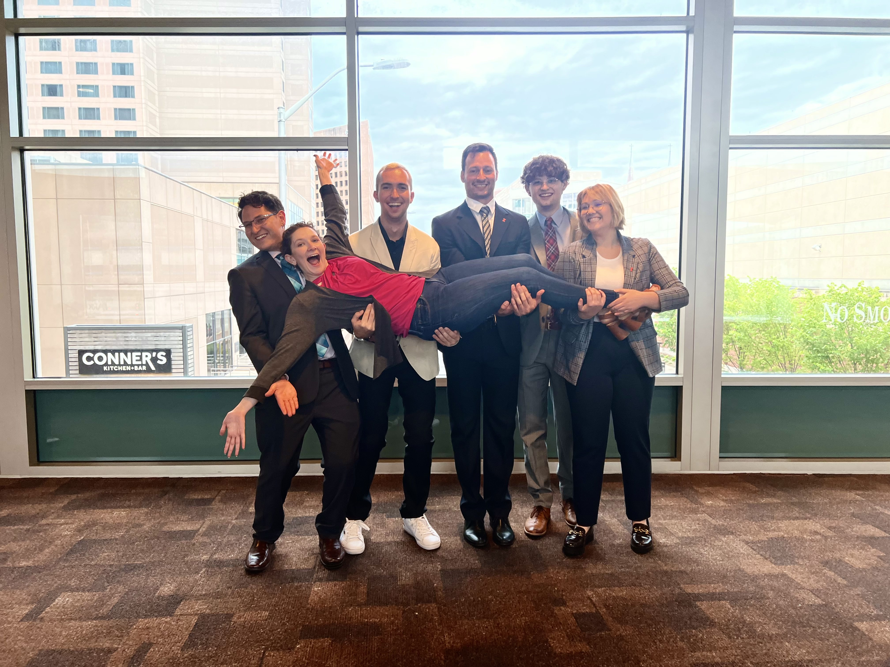
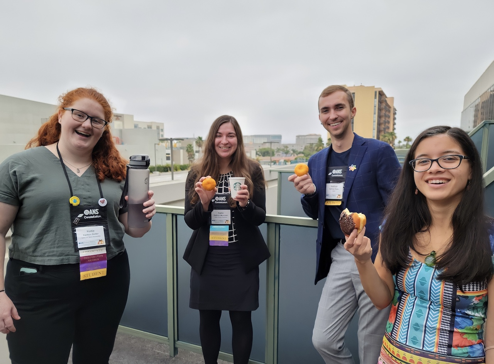
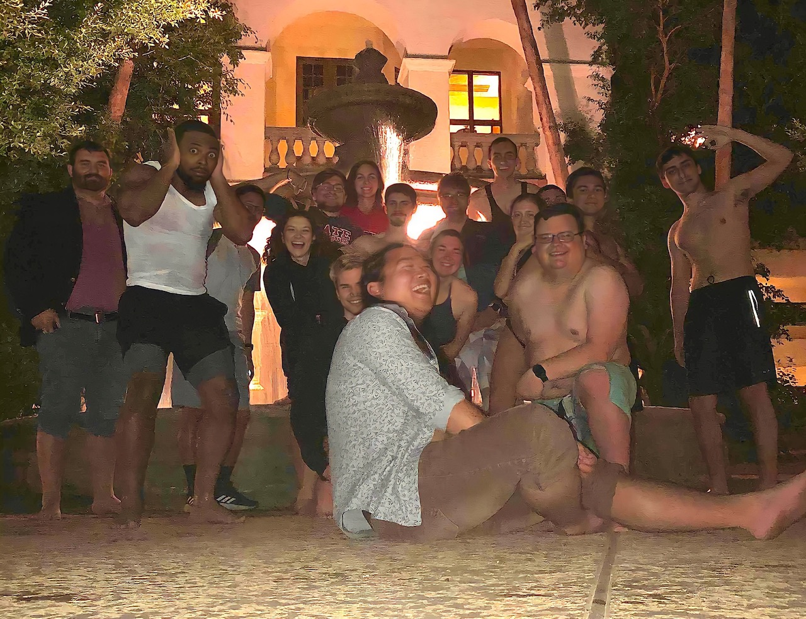
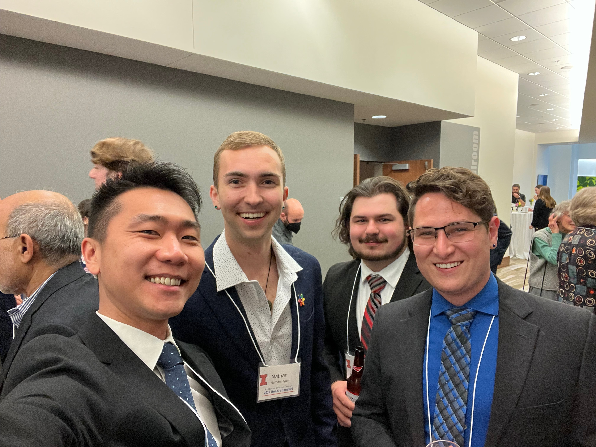

		<!-- Main -->
		<div id="main">
			<div class="inner">

				<!-- Header -->
				<header id="header">
					<a class="logo">Dive into the World of Nuclear Science: A Whirlwind Adventure at the National American Nuclear Society Conferences</a>
				</header>

				<!-- Banner -->
				<section id="banner">
					<div class="content">
						<p>By: Nathan Ryan</p>
						<p>2023-06-19</p>
						<p>Hopefully, you're here to learn a little bit about what to do when attending your first national ANS meeting. This advice is 
            probably generalizable to any conference, but maybe one of these days I'll make one of these for the Student Conference (which is 
            a whole different beast).</p>
						<p></p>
						<p>If this is your first conference all together, good luck! I'll likely be around in some capacity, or I am more than happy to 
            connect you to people I know at the meeting.</p>
					</div>
					<span class="image object">
						
					</span>
				</section>
				<section id="banner">
					<div class="content">
						<p>
							Whether you're a seasoned attendee or a first-timer, this event 
							promises an unforgettable experience (and a light caffeine dependence). 
							Let's dive in and explore some valuable tips to make the most of your time at 
							this professional technical conference.
						<p></p>

						<h2>1. Unlock Opportunities with the DIA Travel Scholarship</h2>
						
							If you're eligible and the application deadline hasn't passed, don't miss 
							the chance to apply for the DIA travel scholarship. This fantastic opportunity 
							can help fuel your passion for nuclear science while providing financial assistance 
							to attend the conference.
						<p></p>

						<h2>2. Crack the Session Conundrum</h2>
						
							When you register under the Student Program, 
							all of the sessions may appear full. Fear not! Remember that these choices are 
							about which sessions you'd like to work for the Student Program rather than attend. 
							Opt for the sessions aligned with your interests, and fear not if you don't get your 
							top pick—it's not a deal-breaker (you can always trade later)!
						</p>
				

						<p>
						<h2>3. Seize the Morning: Volunteer for 8 am Sessions</h2>
						
							Early birds, rejoice! If you're able and willing, consider volunteering for those 
							8 am sessions. By doing so, you'll likely snag them, leaving the rest of your day 
							free to immerse yourself in all the conference offerings. It's an excellent way to 
							make the most of your time and enjoy the rest of the event at your leisure.
						<p></p>

						<h2>4. Unveil the Student Program's Secrets</h2>
						
							Before diving headfirst into the conference, take a moment to peruse the Student Program's 
							summary on the conference website. Still have questions? 
							You can always turn to the co-chairs or your friends in Discord or Slack. Feel free 
							to ask away--we've got a treasure trove of knowledge waiting to be shared!
						<p></p>

						<h2>5. Witness the Mysteries of the Board Meeting</h2>
						
							For those curious souls yearning to witness the innermost workings of ANS, mark 
							your calendars for the board meeting, Thursday 
							from 8 am to 3 pm. If you can't make it, the Business meeting on Wednesday 
							(available only at the annual conference) will provide an opportunity to witness the 
							organization answering questions on the record.
						</p>
						

						<p>
						<h2>6. A Virtual Prelude: Division Meetings</h2>
						
							The divisions within ANS hold their own virtual meetings in the few weeks before 
							the conference. Don't miss out on these insightful gatherings, as they count towards 
							the student program and offer valuable face time with the divisions. Remember to email 
							the meeting leader, indicating your participation in the student program, and request 
							email confirmation for attending the meeting.
						<p></p>

						<h2>7. Secrets of the SSC Meeting</h2>
						
							The highly anticipated SSC 
							meeting always takes place at 6 pm on Monday. But wait, there's more! Following the 
							meeting, an exciting social event awaits, where you'll have the chance to mingle with 
							fellow nuclear enthusiasts. Be sure not to miss this fabulous gathering—it's an ANS 
							conference must!
						<p></p>

						<h2>8. Pack Your Bathing Suit—Pool Possibilities Await!</h2>
						
							Be prepared for unexpected adventures by packing a swimsuit. If there's 
							even a hint of a pool at the conference venue, you'll be ready to go.
						<p></p>

						<h2>9. Dress Practically at the ANS Cocktail Reception</h2>
						
							Tuesday evening brings a delightful treat: the ANS cocktail reception. As you rub 
							shoulders with esteemed professionals, remember to dress comfortably. Who knows, 
							you might even break a sweat on the dance floor, so bring clothes you can move in 
							and let loose! Be prepared to go out afterward, as we will likely continue the party 
							well into the night.
						</p>
						

						<p>
						<h2>10. Ziplock Magic: Dryer Sheets for Your Luggage</h2>
							
							Before you go, here's a handy tip: pack a zip lock bag with dryer sheets for your 
							luggage. As the conference comes to a close, layer your luggage with these sheets. 
							Trust me, your fellow travelers will appreciate the fresh scent you bring along.
						<p></p>

						<h2>11. Make Yourself Known</h2>
							
							Last but certainly not least, don't be afraid to introduce yourself to people 
							you want to meet (especially me). If you want an introduction to someone, don't 
							hesitate to ask, and I can help make that happen. Go into the conference with a
							list of things you want to accomplish and people you want to meet.
						</p>
					<p>
							With these tips in your arsenal, you're ready to make the most of your time at an American Nuclear Society 
							Conference. It's going to be a long couple of days, but in a very valuable for your career.
						</p>
					</div>
				</section>
			</div>
		</div>
